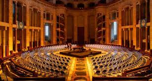
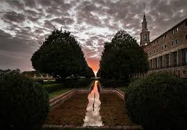

La Universidad Laboral de Gijón es un edificio situado en la parroquia de Cabueñes del concejo de Gijón (Principado de Asturias, España). Desde su construcción entre 1948 y 1957, y hasta la década de 1980, fue sede de una institución franquista orientada a educar a los hijos de los trabajadores. En 2007 se reinventó bajo la marca Laboral Ciudad de la Cultura, que engloba equipamientos como la Radiotelevisión del Principado de Asturias, Laboral Centro de Arte y Creación Industrial y la Facultad de Comercio, Turismo y Ciencias Sociales de la Universidad de Oviedo. A su vez está integrada en la Milla del Conocimiento Margarita Salas.
Se trata de la obra arquitectónica más importante de cuantas se realizaron en Asturias durante el siglo XX. Además, con sus 270 000 m², es el edificio más grande de España. Está declarado Bien de interés cultural con la categoría de Monumento desde 2016.
La imponente Iglesia de la Laboral es, desde el punto de vista arquitectónico, una pieza de singular interés en la que destaca la gran cúpula elíptica y la profusa ornamentación exterior. Es un espacio en el que conviven los usos artísticos y expositivos.
Las aguas se recogen, administran y redistribuyen en función tanto de los sistemas de riego y el régimen de lluvias variables, como de los requerimientos estéticos. Este sistema abarca todas las zonas: la Plaza del Este, con tres fuentes cuadradas de surtidores a ras de suelo; la Fuente Monumental; las acequias de los jardines; y el estanque.
